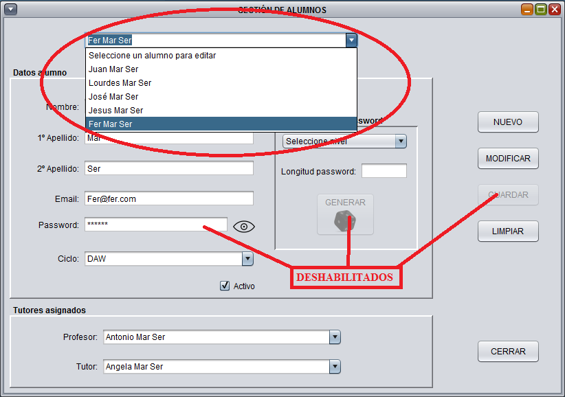
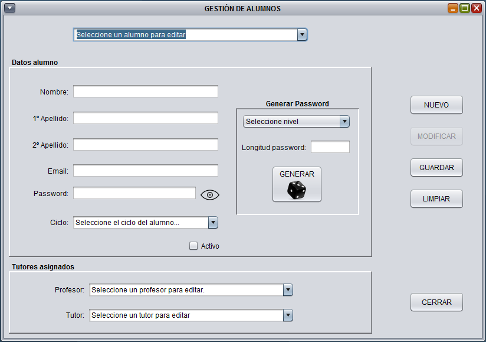

Desde esta ventana, podremos dar de alta a un nuevo alumno o editar uno ya existente en la base de datos
Para editar un alumno existente, sólo deberemos seleccionarlo del desplegable y los datos del alumno se cargaran en sus respectivos campos. Al seleccionar editar un alumno, se habilita el botón de modificar y se deshabilita el de guardar. Igualmente se deshabilita la opción de generar un nuevo password. Todos los campos del alumno pueden ser modificados, salvo el password, es por ello que se deshabilita la opción de escribir en éste campo.

Para crear un nuevo alumno, deberemos asegurarnos de no tener ningún alumno seleccionado y rellenar los campos del formulario. Como ayuda para crear el alumno, disponemos de un generador de password aleatorios con varios niveles de complejidad
